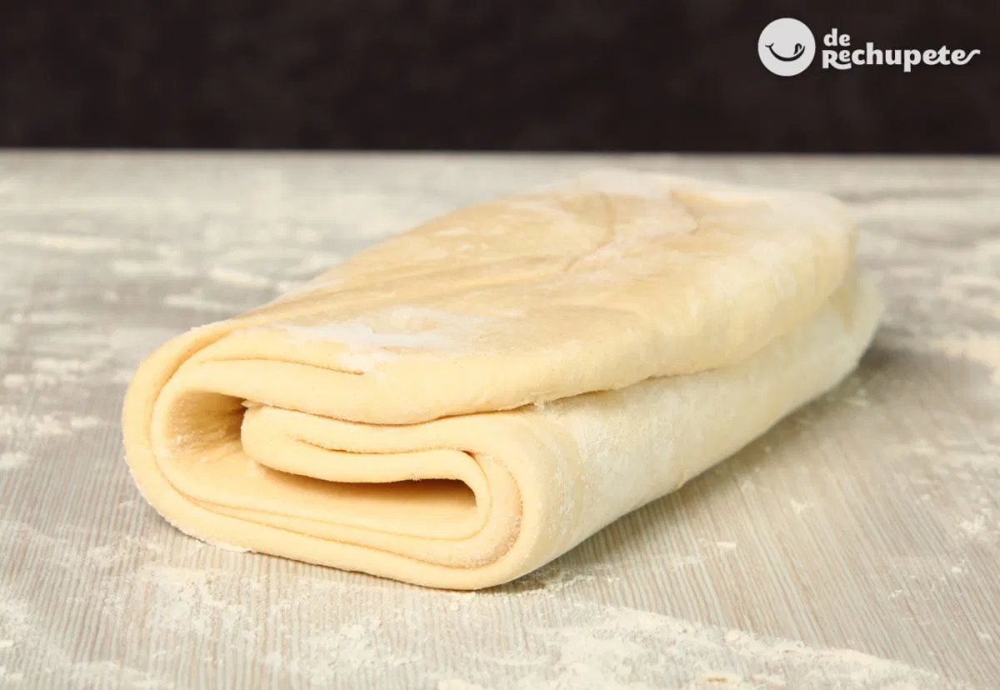
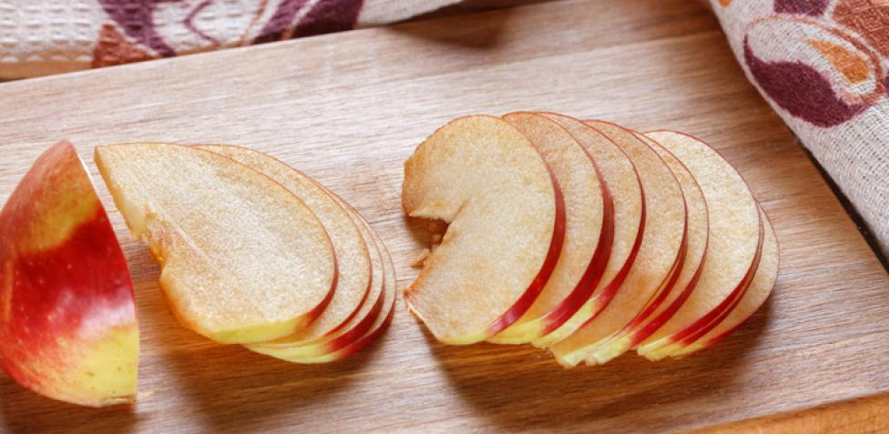
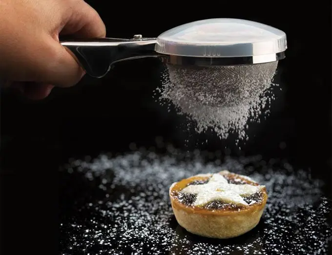
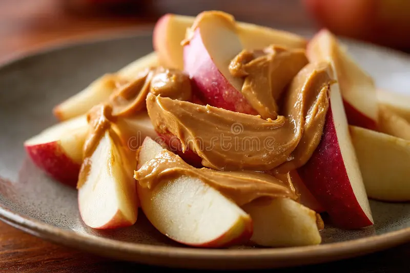

Postre
Tarta fina de manzana con helado de canela
Delicadas láminas de manzana caramelizada sobre una base de masa hojaldrada crujiente, servidas con helado artesanal de canela que aporta calidez y un contraste cremoso al bocado.

Ingredientes para la tarta fina de manzana:
- Masa de hojaldre: 1 lámina 250 g
- Manzanas: 3 medianas 450 g
- Azúcar: 50 g
- Mantequilla: 30g (para derretir sobre las manzanas)
- Canela en polvo: 1/2 cucharadita
- Zumo de limón: 1 cucharadita
Paso a paso
- Precalentar el horno a 200°C.
- Pelar, descorazonar y cortar las manzanas en láminas finas.

- Extender la masa de hojaldre sobre una bandeja de horno con papel vegetal.

- Colocar las láminas de manzana sobre la masa formando filas superpuestas.

- Espolvorear azúcar y canela sobre las manzanas y añadir el zumo de limón.

- Colocar pequeños trozos de mantequilla sobre las manzanas.

- Hornear durante 20-25 minutos hasta que la masa esté dorada y crujiente.
- Mientras tanto, preparar el helado: batir yemas con azúcar hasta que blanqueen.
- Calentar leche y nata, añadir canela, mezclar con las yemas y cocer a fuego lento hasta espesar; enfriar y congelar.
- Servir la tarta caliente acompañada de una bola de helado de canela.